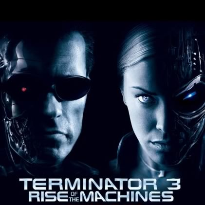

- This is where the story starts to become a bit unhinged. Apparently, destroying "Cyberdyne Systems" in Terminator 2 only postponed "Skynet" from taking over.
- After failing to kill Sarah Connor, and then failing to kill adolescent John Connor, the machines come up with a different tactic. This time, they send a version that is more advanced than the "T-1000", the "T-X". The mission for the "T-X" was to kill all of John Connor's future lieutenants, and then kill the father of John's future wife, Kate Brewster. He was the supposed primary creator of "Skynet". This version not only can do the stuff the "T-1000" could, but it also had the capability to control other machines (Terminators, cars, etc) by injecting a drill into them.
- In order to prevent this, Kate Brewster re-programs the original Terminator, and sends it back to the present-day to save both John and Kate.
- The Terminator was able to save John and Kate, as they learned that they were meant to be together. However, Kate's father was killed by the "T-X". And, John and Kate were sent to a remote hideout to be protected from the initial invasion by the machines.
- This story went from creative and tragic to just tragic.